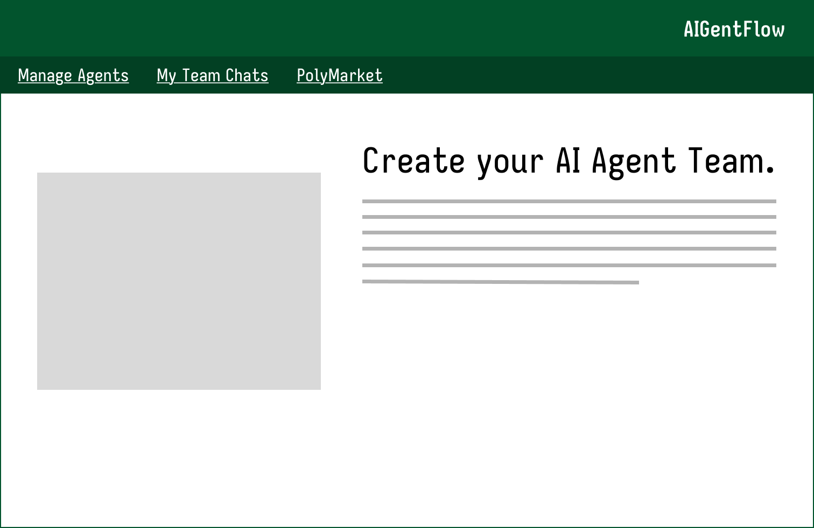

About me
Senior student and aspiring developer currently looking for opportunities in software development, UI/UX design, and IT. I have four years of experience programming in Java and two years of experience programming in C++.
Senior student and aspiring developer currently looking for opportunities in software development, UI/UX design, and IT. I have four years of experience programming in Java and two years of experience programming in C++.
Bachelor of Science in Computer Science

Technology Capstone (CIT 485) · In progress
A website that allows users to configure agents to simulate a team environment. Users can watch the agents work together and provide tasks through a chat window.
Human-Computer Interaction (CSC 310) · In progress
An application that helps users navigate airports. It displays travel times to gates, security checkpoints, and other establishments, as well as wait times at areas such as security checkpoints.